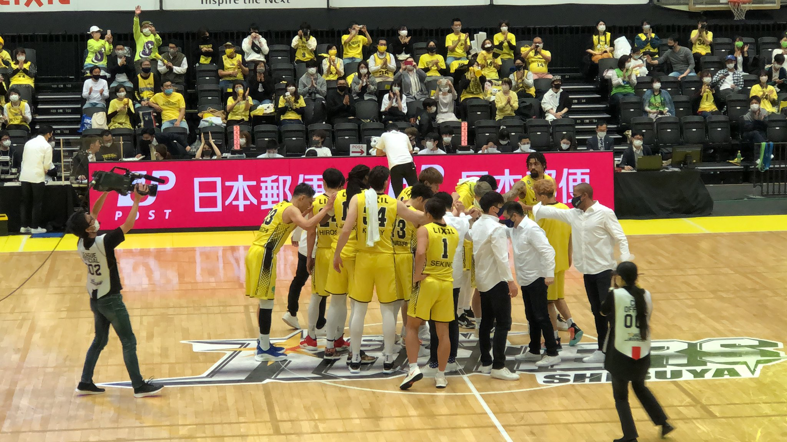
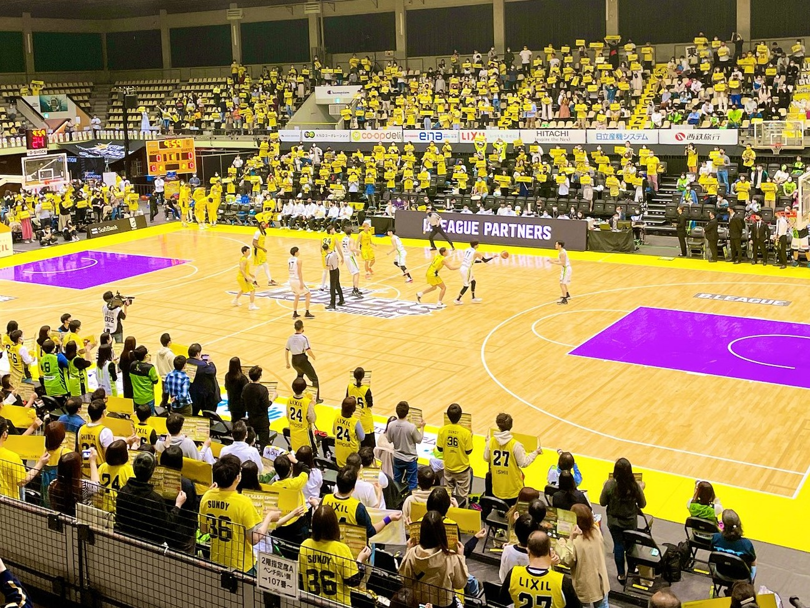
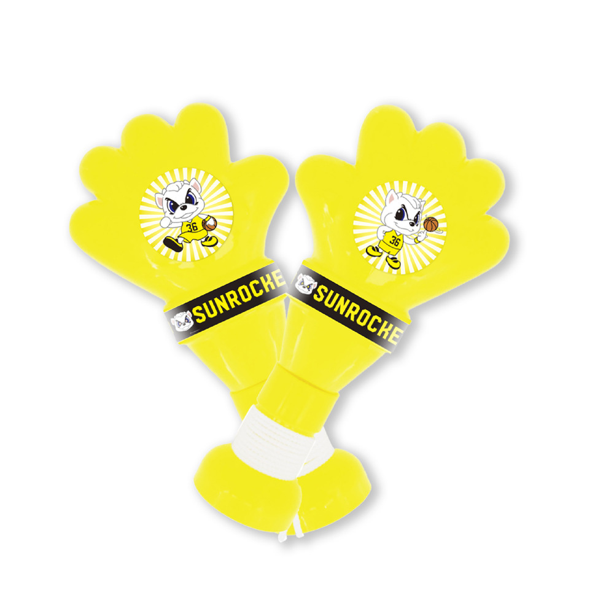

このサイトに訪れていただきありがとうございます！
ここでは、これからBリーグ観戦をしてみたい、Bリーグ観戦は好きだけど
推しのチームがない、バスケって恐いイメージがあって観戦に行くか迷ってるという方に
サンロッカーズ渋谷の素晴らしさを伝える為に作りました。
このサイトを通して、表参道駅から徒歩5分、渋谷駅から徒歩10分というBリーグで1番の好立地にある
ホームアリーナでの観戦がより楽しいものになると嬉しいです！！
-
①このサイトについて
- 
-
②ホームアリーナ
立地の良いホームアリーナ
青山学院大学のキャンパス内にある青山学院記念館 がホームアリーナとなります。大学の協力をいただいたことで、表参道の一等地にホームアリーナを 構える事が出来ました。観戦前はお洒落なカフェやショッピングを楽しみ、試合後はお洒落なバーで試合の反省会をしたいですね^^
オススメのお店はTOKYO Whisky Library！
アリーナから徒歩三分と好立地で18時まではランチ料金で飲めるので、お洒落なバーで勝利の乾杯を上げたい方にオススメです！！＜アクセス＞
〒150-8366 東京都渋谷区渋谷4-4-25
東京メトロ銀座線 表参道駅 Ｂ１出口より徒歩5分
山手線 渋谷駅 徒歩10分応援の流れ
試合開始1時間前から選手のウォーミングアップやオープニングの演出で徐々に盛り上がっていきます。 開始5分前から選手紹介が始まります。これがめっちゃカッコよくて、PV、サンロッカーガールズ、 リズミカルなBGMに合わせた演出でテンションMAXになること間違いなしです！
試合が始まってからは「最初の得点が決まるまでは黄色いボードを掲げて応援」という決まりはありますが、 基本は試合中に流れるBGMやサンロッカーガールズに合わせれば簡単に覚えられます！-
推しの選手Tシャツを買って会場を黄色に染めましょう！
- 
サンディー応援ハンドで手拍子して応援しましょう！
-
-
③チケット
青山学院記念館は客席とコートとの距離が近いので、どの席でも見やすいのが特徴です。 初観戦の方は「2階指定席のベンチ向かい側」席がオススメです。 この席だとコート上で行われるイベントや様々な演出を正面から見ることが出来ます。 選手と一緒に戦う気分を味わいたい方は「1階指定席のホームベンチ裏」がオススメです。 ベンチにいる選手と一緒に一喜一憂しながら観戦出来ます！
サンロッカーズ渋谷は人気チームのため、良い席はすぐに売り切れてしまいます。そのため、先行発売のあるファンクラブに入会することをオススメします。
チケットはスマホにB.LEAGUE TICKETをインストールして、アプリ内で買いましょう。 B.LEAGUE TICKETだとチケットを発券しなくても、会場でQRコードを読み込んで入ることが出来ます。 -
④プレースタイル
圧倒的なファミリー感
元NBAプレイヤーや大学のトップ選手が所属するサンロッカーズですが、 伊佐ヘッドコーチの下、ファミリーのようなチーム作りがされているため、より応援したくなります。
特に選手が倒れた時に全員で手を貸に行く姿や、フリースローなどプレーが途切れるときに 必ず円陣を組んで気持ちを一つにする姿にチームワークの良さが感じられます！！スピーディーな試合展開
激しいディフェンスからターンオーバーを誘発して速攻を出すのがサンロッカーズ渋谷のスタイル！ 2020-2021シーズンはスティール数とオフェンスリバウンド数がリーグ1位、総得点リーグ2位とアグレッシブなプレーから 多く得点が入るプレーはとても見ごたえがあります！ ちなみにアグレッシブすぎて披ブロック数がリーグ1位、ファール数がリーグ2位となってます(笑)
積極的なメンバー交代
伊佐ヘッドコーチによる積極的なメンバー交代から繰り出される全員バスケもサンロッカーズの特徴です。 伊佐ヘッドコーチ曰く、プレータイムを分散させて、コートに出た選手にハードワークさせてディフェンスの 強度を落とさないのが狙いとのことです。個人的にウルトラマン作戦と読んでいます(笑) 時に5人全員メンバー交代という伊佐マジックもあり、多くの選手に愛着が湧くことになるでしょう！
-
⑤注目選手
9ベンドラメ礼生
ポジション ポイントガード 出身地 福岡県 生年月日 1993年11月14日 身長／体重 183cm／83kg 出身大学 東海大学 Twitter @veeeeeeeeeeo Instagram venleo.9 サンロッカーズのキャプテンであり、チーム1の人気を誇る選手。 Bリーグオールスターや日本代表選出の経歴もあり、日本バスケットボール界のスター選手です。 ベンドラメ選手の最大の特徴は高い身体能力を活かしたアグレッシブなディフェンスです。 スティール王獲得経験もあり、ベンドラメ選手のスティールはチームに流れを引き込むと同時に、 観客のボルテージを最高潮に上げてくれます！
10チャールズ・ジャクソン
ポジション センター 出身地 カリフォルニア州 生年月日 1993年05月22日 身長／体重 208cm／102kg 出身大学 テネシー工科大学 YouTube youtu.be/OaOIBKgYM1I Instagram charlesjackson6 みんなから「CJ」の愛称で親しまれるムードメーカーのチャールズジャクソン。 得意プレーはパワーあふれるオフェンスリバウンドや体格に似つかわない走力を兼ね備え、髪型も含め、 野性味溢れる外見とプレーぶりが特徴である。 また、ワイルドな外見とは裏腹にとても優しい人物である。 メディアの質問に気さくに答えたり、敵味方関係なく倒れた選手を心配したり、気遣う姿勢から、ファンに愛されている選手です。
14ジェームズ・マカドゥ
ポジション センター 出身地 バージニア州 生年月日 1993年01月04日 身長／体重 206cm／104kg 出身大学 ノースカロライナ大学 YouTube James Michael McAdoo's Best From 2016-17 Instagram jamesmcadoo 名門ノースカロライナ大出身、NBA ゴールデンステイト・ウォリアーズ所属時代に2度のチャンピオンに輝いており、 輝かしい経歴を持つマカドゥ選手。 しかし輝かしい経歴からは想像が出来ないくらい献身的なプレーが特徴です。 ほとんどシュートは打たず、味方にスクリーンをかける技術やアウトサイドのプレイヤーに マッチアップ出来る脚力が特徴で、たまにお洒落なパスも披露してくれます。 またルーズボールへの執着心が凄まじく、マカドゥ選手のハッスルプレーが選手や観客に勢いを与えてくれます！！
24広瀬 健太
ポジション スモールフォワード 出身地 島根県 生年月日 1985年07月11日 身長／体重 193cm／90kg 出身大学 青山学院大学 Twitter @knt_hrs YouTube 広瀬健太09-10プレー集 サンロッカーズの選手の中でもっとチームへの在籍期間が長い広瀬選手。 過去には新人王受賞や日本代表のキャプテンを勤めたこともあり、 チームの兄貴的な存在です。 外国人選手相手にも当たり負けしない強靭なフィジカルと長い手を活かしたディフェンスが 得意で、広瀬選手のスティールがチームに勢いを与えてくれます。
27石井 講祐
ポジション シューティングガード 出身地 千葉県 生年月日 1987年09月29日 身長／体重 182cm／78kg 出身大学 東海大学 Twitter @k_ishii27 Instagram ishiikosuke 大学卒業後、富士通の営業マンから脱サラ後、千葉ジェッツの練習生からプロの世界に飛び込んだ努力家の石井選手。 その後は千葉ジェッツで天皇杯2連覇、3ポイント王、オールスター選出など輝かしいキャリアを築いてます。 現在はBリーグ屈指の3ポイントシューターとして活躍中です！
34ライアン・ケリー
ポジション パワーフォワード 出身地 ニューヨーク州 生年月日 1991年04月09日 身長／体重 211cm／104kg 出身大学 デューク大学 YouTube Kelly MONTHLY MVP NOMINEE!! Instagram ryankelly34 サンロッカーズファミリーが全幅の信頼を置くエース。NBAレイカーズでのプレー経験を持ち、あの伝説のコービー・ブライアント引退試合で 現役最後のプレーを終えコートを去るコービーと交代したという素晴らしい経験を持つケリー選手。 コービーのメンタリティーを受け継ぎ、勝負所で抜群の勝負強さを持ち、ケリー選手のおかげで勝てた試合は数知れず。 多彩なオフェンススキルを持ち、211cmから放たれる3ポイントシュートやフェイダウェイシュートを止めることは不可能で、 おそらくBリーグで最もアンストッパブルなプレーヤーです！
-
⑥サンディー
名前 サンディー 誕生日 10月11日 生態 シロクマ 特技 ダンス、お絵かき、書道 チャームポイント 色白 趣味 エゴサ、ポケ森 性格 やんちゃ、負けず嫌い、自由奔放が過ぎる コメント 彼女募集中 ポジション ガード instagram 36sundy サンロッカーズ渋谷のマスコットキャラクターはシロクマのサンディー🐻
試合前は渋谷ファンだけでなくアウェイのファンや選手に絡む自由さが特徴。
タイムアウトやハーフタイム間には軽快なダンスを披露することもあり、ファンの中ではイケクマと呼ばれている。 サンディーに会うために青学に足を運ぶファンもいるとか。 また、季節や時事ネタにも敏感で、イベントごとに変装を披露することもあり、試合を観に行く楽しみを増やしてくれる マスコットである。 -
⑦サンロッカーガールズ
ハーフタイムやインターバル間に力強いダンスパフォーマンスで会場を盛り上げてくれるサンロッカーガールズ。 10人のメンバーで構成されており、NBAオクラホマシティ・サンダーにて日本人初のダンサーとして活躍した石井尚子がディレクターを務る。 試合前は客席を回ってお客さんに声をかけたり、試合中は率先して声を出して応援をリードしてくれて、どこに座っていてもサンロッカーガールズの声が聞こえてきます。 「勝利の女神」としてサンロッカーズに欠かせない彼女たちのパフォーマンスが楽しみで会場に足を運ぶ方も 多いと思いはず！そんなサンロッカーガールズに今後も注目して行きたいです！ ちなみに写真は私が一番推しているKAHOさんです💛
-
イベントごとに変わる衣装
この日はLIXIL DAY -
サンディーとのパフォーマンス
-
息ピッタリのパフォーマンス
-